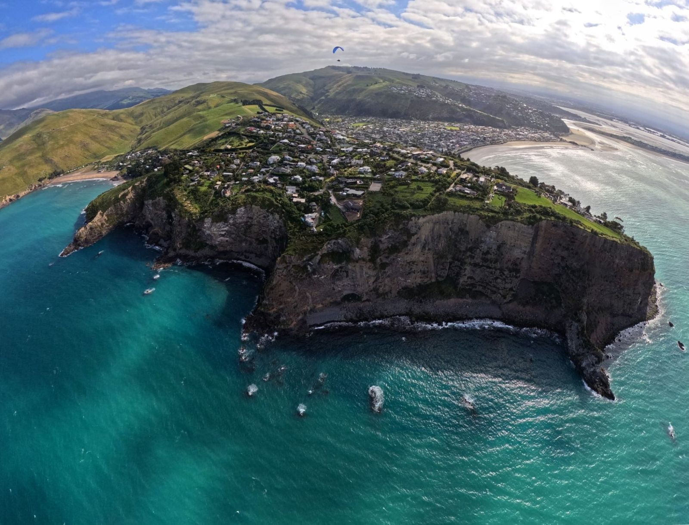
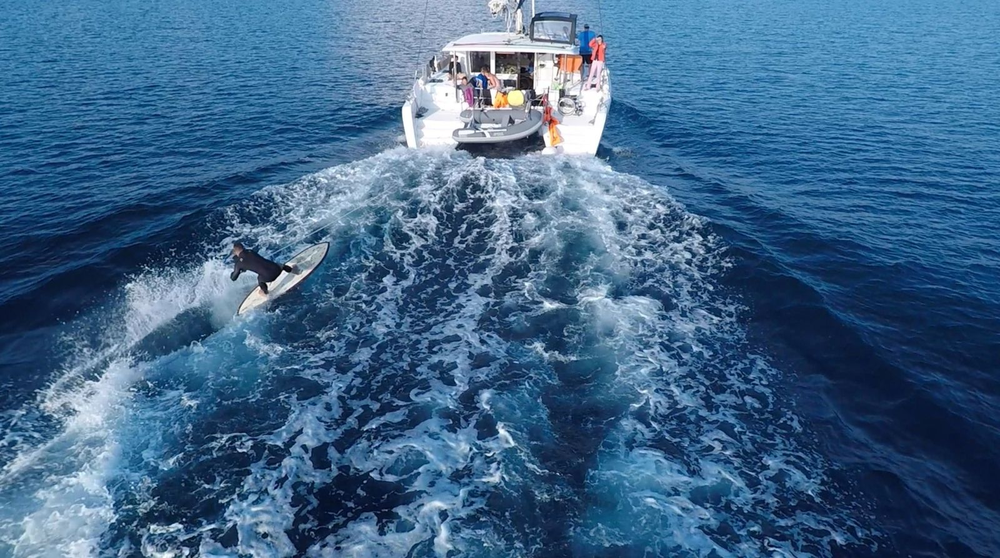

Ruka a prkno
Pravou rukou jsem dlouho nehýbal. Rozpohyboval jsem ji a vyrostl na skateboardu a snowboardu.
Celý život vstupuju do prostředí, kde nemám návod. Havířov, Kalifornie, Bali, Sumatra, Nový Zéland. Dnes to, co jsem se tam naučil, učím firmy a studenty.

✶ Paragliding, Nový ZélandPro spoustu lidí to vypadá jako řada extrémů. Surf, hotel, ostrov, korporát, AI. Pro mě je to pořád totéž ve stále jiném prostředí.
Pokaždé jsem přišel tam, kde jsem neznal pravidla. Musel jsem je pochopit, rozhodnout se a nést odpovědnost za výsledek i za lidi.
Přesně tohle dnes potřebují firmy, které se učí pracovat s AI.
Každá kapitola mého života dokládá aspoň jednu z nich. Klikněte a uvidíte důkazy.
Vstoupit tam, kde není návod, naučit se pravidla a najít vlastní cestu.
Rozhodnout se, když na tom záleží víc než na pohodlí.

Technologie má lidem vracet čas a sílu, ne je nahrazovat.
Šest míst, šest nových prostředí. Každé mě něco naučilo.
Pravou rukou jsem dlouho nehýbal. Rozpohyboval jsem ji a vyrostl na skateboardu a snowboardu.
Ve 23 letech vlastní firma na longboardy s díly umělců, výroba v pěti zemích.
Postavil jsem hotel, abych mohl surfovat každý den. Covid mi ho vzal.
Pinang u Sumatry. Krizové řízení, logistika, dvě záchranné mise.
Quality Coordinator v Kathmandu. Krize kvality hero produktu.
Zakladatel Enteru, pedagog oboru Agentic Company na VŠEM.
Keynote, panel, podcast nebo workshop. Česky i anglicky.
Jak se lidé a firmy učí v prostředí, kde neplatí stará pravidla. Od surfu s jednou rukou po firmy, které se učí pracovat s AI.
Keynote · podcast · firmy a školyRozhodování, když na něm záleží. Co mě o vedení lidí naučily záchranné mise na ostrově, hotel na Bali a krize kvality v korporátu.
Keynote · panel · leadershipJak vypadá firma, kde s lidmi pracují AI agenti. A proč má technologie lidem vracet čas. Téma, které učím na VŠEM.
Keynote · workshop · vedení firemCelý život mě zajímá, co se v člověku děje, když ho úraz nebo handicap donutí znovu se zorientovat. Adapted teď stavíme znovu a hledáme partnery a lidi, kteří se zapojí, v Česku i v zahraničí.
Zapojit se →Komunistický režim lidi s handicapem dlouho odsouval na okraj společnosti. To stigma se překonává, ale zmizelo zdaleka ne.
Prošel jsem si sebevraždou svého bratra. Naučilo mě to být tady a teď a dělat věci, které dávají smysl. Pomohla mi vipassana, meditace a práce s dechem.
Pokud procházíte něčím těžkým, zavolejte na Linku první psychické pomoci 116 123, nonstop a zdarma.
Doplním podcasty HRko a Essence, SummiD a VŠEM.